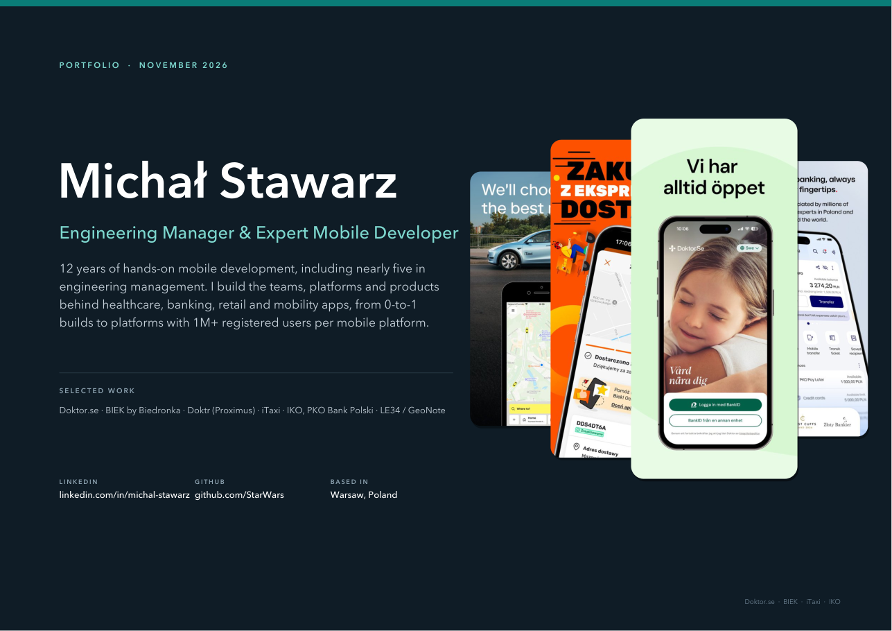

Michał Stawarz
Engineering Manager & Expert Mobile Developer
12 years of hands-on mobile development. I build and lead the apps behind healthcare, retail, mobility and banking, from 0-to-1 products to platforms with 1M+ registered users per mobile platform.
BIEK · Grocery delivery for Biedronka
BIEK is the grocery-delivery app for Biedronka, Poland’s largest retailer. Shoppers can reorder groceries, choose a delivery window and track their order.
I helped win the tender, then built and led the core mobile team. With fellow engineers, I co-created a Kotlin Multiplatform architecture with shared business logic and native iOS and Android interfaces. I defined the API contracts that let us build and test shopping flows for months before backend implementation began.
My engagement ran from August 2024 to March 2026. BIEK launched nationally in November 2026.


Open the case-study portfolio (PDF, 15 pages)

Apps you can open on your phone
- Doktor.seHealthcare. 4.8 stars from 114k App Store ratings. I build iOS hands-on and, as App Lead, own its mobile decisions.
- iTaxiMobility. Led iOS delivery of a legacy-app redesign.
- IKO, PKO Bank PolskiBanking. Onboarding, transfers and payments features, 2020–2021.
Also in the PDF
- Doktr (Proximus)Customer-specific end-to-end encryption in a healthcare chat.
- LE34 / GeoNote40+ white-label apps, plus games and earlier work.